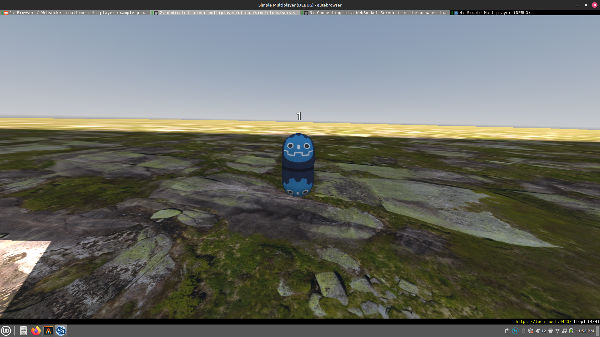
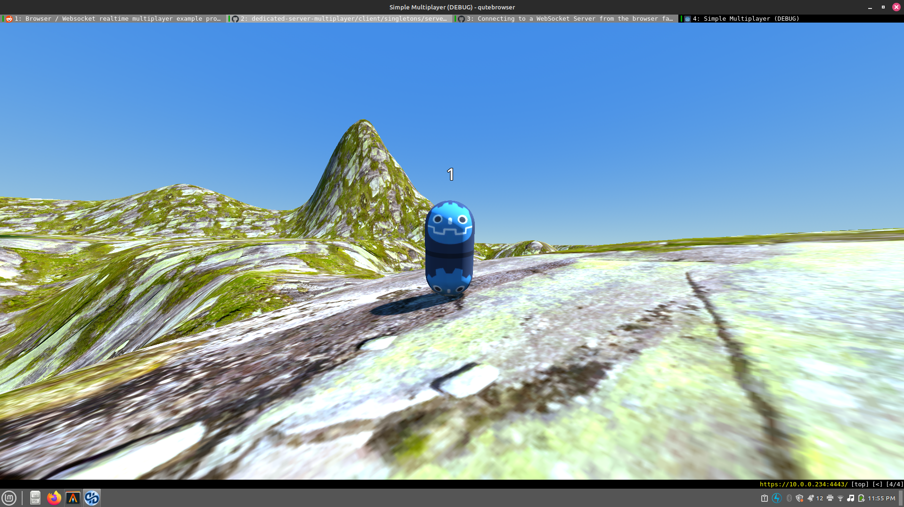

For a while now I’ve been wanting to create a simple social networked game. Basically just a chat room where you can explore a 3D world, in browser. Recently, since I’ve been entering game jams for fun and learning the Godot Engine, I decided to actually work towards this dream.
For a start, I grabbed this super helpful starter project to learn how the high level networking feature works in Godot. I then grabbed the amazing Terrain3D extension so that my world can have a nice, varied terrain.
As I wanted to export for the web, I had to re-compile the Godot Engine from source.
They have a mostly helpful guide on how to do that,
but it is missing some important information. It seems you can’t use too recent an Emscripten version,
so I set up the Emscripten compiler version 3.1.39 using the emsdk. I also set up scons, and already had a sufficient python version.
I then cloned godot, and compiled it with plugins enabled. Next, I added it as an export template to my editor.
I am noticing this weird thing though where on line 141 of the generated index.html file, it is failing to replace
$GODOT_THREADS_ENABLED with true. Not sure the cause, but it’s easy to just correct this afterwards.
I run my project, and I am met with this:

Which is very sad. Where is the wonderful terrain I quickly through together to see if it was working?!?!
Well, it turns out that the Terrain3D plugin doesn’t support the web. It doesn’t include the wasm library, but even if it did, the Godot web renderer doesn’t support TextureArrays… is what I’d be saying any time before yesterday. I saw that the PR to add support there was merged into the engine, so I went back to work.
I compiled the Terrain3D plugin for web after making the rookie mistake of not cloning the repo recursively, and copied the generated
wasm file into the plugin in my addons folder in Godot. I also set Terrain3D to use a custom shader rather than its built-in one.
I then built the project, but I was met with great sadness - there was some error about
fma not being supported on non-high-end-hardware. I’m not sure what one of the greatest anime of all time has to do with browser rendering, so
I replaced the fma(a, b, c) call with (a * b + c). Next, there was an error about the precissions not being set on the samplers, so I sprinkled
in some lowps and highps as I felt appropriate (I have no idea what I’m doing). Then, at least the shader would compile in-browser, so I gave it a go, and…
Why?!? And this time, the console was far less helpful, simply saying GL_INVALID_OPERATION: Mismatch between texture format and sampler type, without a line number
or anything. There were 6 or 7 samplers in the shader, so I commented them all out and by process of elimination discovered that it was the _control_maps sampler. Now, I
actually would have bet on that being the only sampler I knew was right, since it was the only one that was a different type - it was a usampler while the rest were samplers,
and the outputs it was expected to produce were unsigned ints so that seemed correct. Well, it turns out that Godot doesn’t actually support integer samplers at the moment. There seems to be a workaround using floatBitsToUint so I attempted to implement it, and this pleased the web browser, finally allowing me to see this:

Anyway, if anyone happens to benefit from it, my modified shader is below:
shader_type spatial;
render_mode blend_mix,depth_draw_opaque,cull_back,diffuse_burley,specular_schlick_ggx;
/* This shader is generated based upon the debug views you have selected.
* The terrain function depends on this shader. So don't change:
* - vertex positioning in vertex()
* - terrain normal calculation in fragment()
* - the last function being fragment() as the editor injects code before the closing }
*
* Most will only want to customize the material calculation and PBR application in fragment()
*
* Uniforms that begin with _ are private and will not display in the inspector. However,
* you can set them via code. You are welcome to create more of your own hidden uniforms.
*
* This system only supports albedo, height, normal, roughness. Most textures don't need the other
* PBR channels. Height can be used as an approximation for AO. For the rare textures do need
* additional channels, you can add maps for that one texture. e.g. an emissive map for lava.
*
*/
// Private uniforms
uniform float _region_size = 1024.0;
uniform float _region_texel_size = 0.0009765625; // = 1./1024.
uniform int _region_map_size = 16;
uniform int _region_map[256];
uniform vec2 _region_offsets[256];
uniform highp sampler2DArray _height_maps : repeat_disable;
uniform lowp sampler2DArray _control_maps : repeat_disable;
uniform lowp sampler2DArray _color_maps : source_color, filter_linear_mipmap_anisotropic, repeat_disable;
uniform lowp sampler2DArray _texture_array_albedo : source_color, filter_linear_mipmap_anisotropic, repeat_enable;
uniform lowp sampler2DArray _texture_array_normal : hint_normal, filter_linear_mipmap_anisotropic, repeat_enable;
uniform lowp sampler2D noise_texture : source_color, filter_linear_mipmap_anisotropic, repeat_enable;
uniform float _texture_uv_scale_array[32];
uniform float _texture_uv_rotation_array[32];
uniform vec4 _texture_color_array[32];
uniform int _background_mode = 1; // NONE = 0, FLAT = 1, NOISE = 2
// Public uniforms
uniform bool height_blending = true;
uniform float blend_sharpness : hint_range(0, 1) = 0.87;
uniform vec3 macro_variation1 : source_color = vec3(1.);
uniform vec3 macro_variation2 : source_color = vec3(1.);
// Generic noise at 3 scales, which can be used for anything
uniform float noise1_scale : hint_range(0.001, 1.) = 0.04; // Used for macro variation 1. Scaled up 10x
uniform float noise1_angle : hint_range(0, 6.283) = 0.;
uniform vec2 noise1_offset = vec2(0.5);
uniform float noise2_scale : hint_range(0.001, 1.) = 0.076; // Used for macro variation 2. Scaled up 10x
uniform float noise3_scale : hint_range(0.001, 1.) = 0.225; // Used for texture blending edge.
// Varyings & Types
struct Material {
vec4 alb_ht;
vec4 nrm_rg;
int base;
int over;
float blend;
};
varying vec3 v_vertex; // World coordinate vertex location
varying vec3 v_camera_pos;
varying float v_xz_dist;
varying flat ivec3 v_region;
////////////////////////
// Vertex
////////////////////////
// Takes in UV world space coordinates, returns ivec3 with:
// XY: (0 to _region_size) coordinates within a region
// Z: layer index used for texturearrays, -1 if not in a region
ivec3 get_region_uv(vec2 uv) {
uv *= _region_texel_size;
ivec2 pos = ivec2(floor(uv)) + (_region_map_size / 2);
int bounds = int(pos.x>=0 && pos.x<_region_map_size && pos.y>=0 && pos.y<_region_map_size);
int layer_index = _region_map[ pos.y * _region_map_size + pos.x ] * bounds - 1;
return ivec3(ivec2((uv - _region_offsets[layer_index]) * _region_size), layer_index);
}
// Takes in UV2 region space coordinates, returns vec3 with:
// XY: (0 to 1) coordinates within a region
// Z: layer index used for texturearrays, -1 if not in a region
vec3 get_region_uv2(vec2 uv) {
ivec2 pos = ivec2(floor(uv)) + (_region_map_size / 2);
int bounds = int(pos.x>=0 && pos.x<_region_map_size && pos.y>=0 && pos.y<_region_map_size);
int layer_index = _region_map[ pos.y * _region_map_size + pos.x ] * bounds - 1;
return vec3(uv - _region_offsets[layer_index], float(layer_index));
}
// 1 lookup
float get_height(vec2 uv) {
highp float height = 0.0;
vec3 region = get_region_uv2(uv);
if (region.z >= 0.) {
height = texture(_height_maps, region).r;
}
return height;
}
void vertex() {
// Get camera pos in world vertex coords
v_camera_pos = INV_VIEW_MATRIX[3].xyz;
// Get vertex of flat plane in world coordinates and set world UV
v_vertex = (MODEL_MATRIX * vec4(VERTEX, 1.0)).xyz;
v_xz_dist = length(v_vertex.xz - v_camera_pos.xz);
// UV coordinates in world space. Values are 0 to _region_size within regions
UV = v_vertex.xz;
// Discard vertices if designated as a hole or background disabled. 1 lookup.
v_region = get_region_uv(UV);
uint control = floatBitsToUint(texelFetch(_control_maps, v_region, 0).r);
bool hole = bool(control >>2u & 0x1u);
if ( hole || (_background_mode == 0 && v_region.z < 0) ) {
VERTEX.x = 0./0.;
} else {
// UV coordinates in region space + texel offset. Values are 0 to 1 within regions
UV2 = (UV + vec2(0.5)) * _region_texel_size;
// Get final vertex location and save it
VERTEX.y = get_height(UV2);
v_vertex = (MODEL_MATRIX * vec4(VERTEX, 1.0)).xyz;
}
}
////////////////////////
// Fragment
////////////////////////
// 4 lookups
vec3 get_normal(vec2 uv, out vec3 tangent, out vec3 binormal) {
float left = get_height(uv + vec2(-_region_texel_size, 0));
float right = get_height(uv + vec2(_region_texel_size, 0));
float back = get_height(uv + vec2(0, -_region_texel_size));
float front = get_height(uv + vec2(0, _region_texel_size));
vec3 horizontal = vec3(2.0, right - left, 0.0);
vec3 vertical = vec3(0.0, back - front, 2.0);
vec3 normal = normalize(cross(vertical, horizontal));
normal.z *= -1.0;
tangent = cross(normal, vec3(0, 0, 1));
binormal = cross(normal, tangent);
return normal;
}
vec3 unpack_normal(vec4 rgba) {
vec3 n = rgba.xzy * 2.0 - vec3(1.0);
n.z *= -1.0;
return n;
}
vec4 pack_normal(vec3 n, float a) {
n.z *= -1.0;
return vec4((n.xzy + vec3(1.0)) * 0.5, a);
}
float random(in vec2 xy) {
return fract(sin(dot(xy, vec2(12.9898, 78.233))) * 43758.5453);
}
vec2 rotate(vec2 v, float cosa, float sina) {
return vec2(cosa * v.x - sina * v.y, sina * v.x + cosa * v.y);
}
vec4 height_blend(vec4 a_value, float a_height, vec4 b_value, float b_height, float blend) {
if(height_blending) {
float ma = max(a_height + (1.0 - blend), b_height + blend) - (1.001 - blend_sharpness);
float b1 = max(a_height + (1.0 - blend) - ma, 0.0);
float b2 = max(b_height + blend - ma, 0.0);
return (a_value * b1 + b_value * b2) / (b1 + b2);
} else {
float contrast = 1.0 - blend_sharpness;
float factor = (blend - contrast) / contrast;
return mix(a_value, b_value, clamp(factor, 0.0, 1.0));
}
}
// 2-4 lookups
void get_material(vec2 uv, uint control, ivec3 iuv_center, vec3 normal, out Material out_mat) {
out_mat = Material(vec4(0.), vec4(0.), 0, 0, 0.0);
vec2 uv_center = vec2(iuv_center.xy);
int region = iuv_center.z;
out_mat.base = int(control >>27u & 0x1Fu);
out_mat.over = int(control >> 22u & 0x1Fu);
out_mat.blend = float(control >>14u & 0xFFu) * 0.003921568627450; // 1./255.0
float r = random(uv_center) * PI;
float rand = r * _texture_uv_rotation_array[out_mat.base];
vec2 rot = vec2(cos(rand), sin(rand));
uv *= .5; // Allow larger numbers on uv scale array - move to C++
vec2 matUV = rotate(uv, rot.x, rot.y) * _texture_uv_scale_array[out_mat.base];
vec4 albedo_ht = vec4(0.);
vec4 normal_rg = vec4(0.5f, 0.5f, 1.0f, 1.0f);
vec4 albedo_far = vec4(0.);
vec4 normal_far = vec4(0.5f, 0.5f, 1.0f, 1.0f);
albedo_ht = texture(_texture_array_albedo, vec3(matUV, float(out_mat.base)));
normal_rg = texture(_texture_array_normal, vec3(matUV, float(out_mat.base)));
// Apply color to base
albedo_ht.rgb *= _texture_color_array[out_mat.base].rgb;
// Unpack base normal for blending
vec3 n = unpack_normal(normal_rg);
normal_rg.xz = rotate(n.xz, rot.x, -rot.y);
// Setup overlay texture to blend
float rand2 = r * _texture_uv_rotation_array[out_mat.over];
vec2 rot2 = vec2(cos(rand2), sin(rand2));
vec2 matUV2 = rotate(uv, rot2.x, rot2.y) * _texture_uv_scale_array[out_mat.over];
vec4 albedo_ht2 = texture(_texture_array_albedo, vec3(matUV2, float(out_mat.over)));
vec4 normal_rg2 = texture(_texture_array_normal, vec3(matUV2, float(out_mat.over)));
// Though it would seem having the above lookups in this block, or removing the branch would
// be more optimal, the first introduces artifacts #276, and the second is noticably slower.
// It seems the branching off dual scaling and the color array lookup is more optimal.
if (out_mat.blend > 0.f) {
// Apply color to overlay
albedo_ht2.rgb *= _texture_color_array[out_mat.over].rgb;
// Unpack overlay normal for blending
n = unpack_normal(normal_rg2);
normal_rg2.xz = rotate(n.xz, rot2.x, -rot2.y);
// Blend overlay and base
albedo_ht = height_blend(albedo_ht, albedo_ht.a, albedo_ht2, albedo_ht2.a, out_mat.blend);
normal_rg = height_blend(normal_rg, albedo_ht.a, normal_rg2, albedo_ht2.a, out_mat.blend);
}
// Repack normals and return material
normal_rg = pack_normal(normal_rg.xyz, normal_rg.a);
out_mat.alb_ht = albedo_ht;
out_mat.nrm_rg = normal_rg;
return;
}
float blend_weights(float weight, float detail) {
weight = sqrt(weight * 0.5);
float result = max(0.1 * weight, 10.0 * (weight + detail) + 1.0f - (detail + 10.0));
return result;
}
void fragment() {
// Calculate Terrain Normals. 4 lookups
vec3 w_tangent, w_binormal;
vec3 w_normal = get_normal(UV2, w_tangent, w_binormal);
NORMAL = mat3(VIEW_MATRIX) * w_normal;
TANGENT = mat3(VIEW_MATRIX) * w_tangent;
BINORMAL = mat3(VIEW_MATRIX) * w_binormal;
// Idenfity 4 vertices surrounding this pixel
vec2 texel_pos = UV;
highp vec2 texel_pos_floor = floor(UV);
// Create a cross hatch grid of alternating 0/1 horizontal and vertical stripes 1 unit wide in XY
vec4 mirror = vec4(fract(texel_pos_floor * 0.5) * 2.0, 1.0, 1.0);
// And the opposite grid in ZW
mirror.zw = vec2(1.0) - mirror.xy;
// Get the region and control map ID for the vertices
ivec3 index00UV = get_region_uv(texel_pos_floor + mirror.xy);
ivec3 index01UV = get_region_uv(texel_pos_floor + mirror.xw);
ivec3 index10UV = get_region_uv(texel_pos_floor + mirror.zy);
ivec3 index11UV = get_region_uv(texel_pos_floor + mirror.zw);
// Lookup adjacent vertices. 4 lookups
uint control00 = floatBitsToUint(texelFetch(_control_maps, index00UV, 0).r);
uint control01 = floatBitsToUint(texelFetch(_control_maps, index01UV, 0).r);
uint control10 = floatBitsToUint(texelFetch(_control_maps, index10UV, 0).r);
uint control11 = floatBitsToUint(texelFetch(_control_maps, index11UV, 0).r);
// Get the textures for each vertex. 8-16 lookups (2-4 ea)
Material mat[4];
get_material(UV, control00, index00UV, w_normal, mat[0]);
get_material(UV, control01, index01UV, w_normal, mat[1]);
get_material(UV, control10, index10UV, w_normal, mat[2]);
get_material(UV, control11, index11UV, w_normal, mat[3]);
// Calculate weight for the pixel position between the vertices
// Bilinear interpolation of difference of UV and floor(UV)
vec2 weights1 = clamp(texel_pos - texel_pos_floor, 0, 1);
weights1 = mix(weights1, vec2(1.0) - weights1, mirror.xy);
vec2 weights0 = vec2(1.0) - weights1;
// Adjust final weights by noise. 1 lookup
float noise3 = texture(noise_texture, UV*noise3_scale).r;
vec4 weights;
weights.x = blend_weights(weights0.x * weights0.y, noise3);
weights.y = blend_weights(weights0.x * weights1.y, noise3);
weights.z = blend_weights(weights1.x * weights0.y, noise3);
weights.w = blend_weights(weights1.x * weights1.y, noise3);
float weight_sum = weights.x + weights.y + weights.z + weights.w;
float weight_inv = 1.0/weight_sum;
// Weighted average of albedo & height
vec4 albedo_height = weight_inv * (
mat[0].alb_ht * weights.x +
mat[1].alb_ht * weights.y +
mat[2].alb_ht * weights.z +
mat[3].alb_ht * weights.w );
// Weighted average of normal & rough
vec4 normal_rough = weight_inv * (
mat[0].nrm_rg * weights.x +
mat[1].nrm_rg * weights.y +
mat[2].nrm_rg * weights.z +
mat[3].nrm_rg * weights.w );
// Determine if we're in a region or not (region_uv.z>0)
vec3 region_uv = get_region_uv2(UV2);
// Colormap. 1 lookup
vec4 color_map = vec4(1., 1., 1., .5);
if (region_uv.z >= 0.) {
color_map = texture(_color_maps, region_uv);
}
// Macro variation. 2 Lookups
float noise1 = texture(noise_texture, rotate(UV*noise1_scale*.1, cos(noise1_angle), sin(noise1_angle)) + noise1_offset).r;
float noise2 = texture(noise_texture, UV*noise2_scale*.1).r;
vec3 macrov = mix(macro_variation1, vec3(1.), clamp(noise1 + v_xz_dist*.0002, 0., 1.));
macrov *= mix(macro_variation2, vec3(1.), clamp(noise2 + v_xz_dist*.0002, 0., 1.));
// Wetness/roughness modifier, converting 0-1 range to -1 to 1 range
float roughness = (color_map.a-0.5) * 2.0 + normal_rough.a;
// Apply PBR
ALBEDO = albedo_height.rgb * color_map.rgb * macrov;
ROUGHNESS = roughness;
SPECULAR = 1.-normal_rough.a;
NORMAL_MAP = normal_rough.rgb;
NORMAL_MAP_DEPTH = 1.0;
}